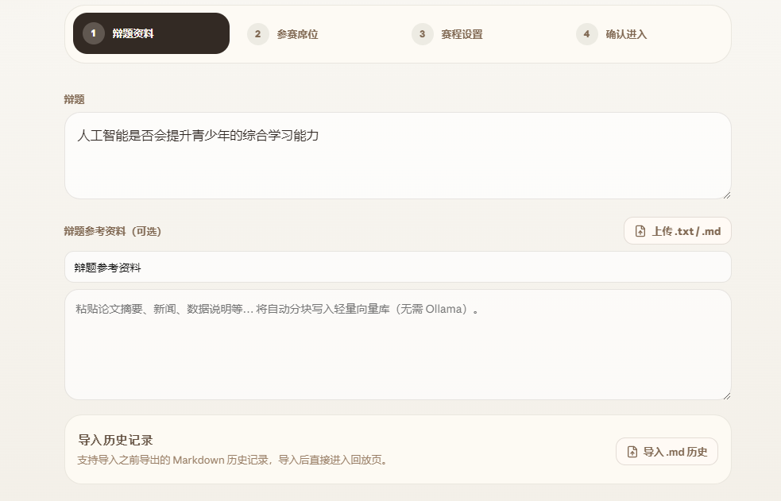

AI DEBATE ARENA
第二幕 · 人机协同
AI 辅助思考，而非替代思考
系统刻意保留学生的发言权，让 AI 做陪练、资料官和教练。

人机混合模式下，轮到用户时自动暂停；用户可以查看资料、当前战场和 AI 建议。
AI 教练提供反驳切口、追问方向与可编辑草稿，但最终提交权仍在学生手里。
语音输入、ASR 转写和自信度摄像头训练，让表达训练不止停留在文字层面。
人机协同的边界越清楚，训练价值越高：AI 给方向和证据，人完成判断与表达。